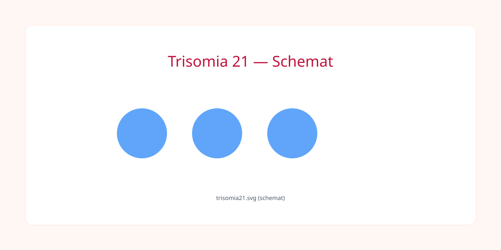
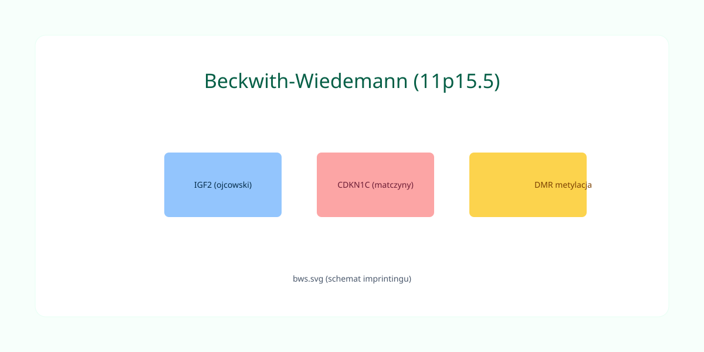
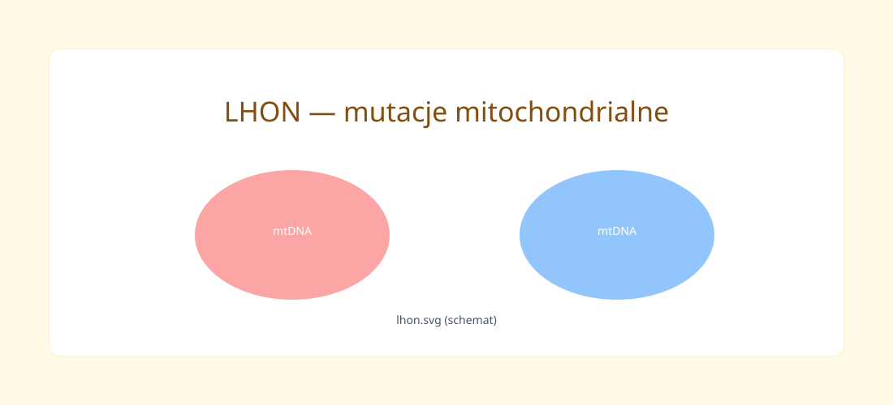
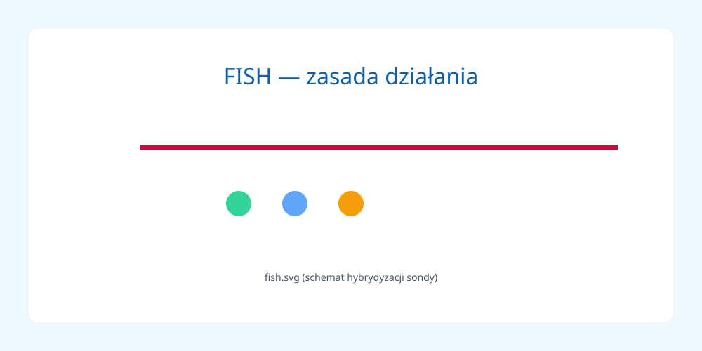

Podstawy Genetyki Ogólnej
Podziały

Podział Komórki i Ploidalność
- Mitoza: podział komórek somatycznych; zachowuje ploidalność (2n→2n). Nieprawidłowości mogą dawać mozaicyzm somatyczny.
- Mejoza: podział redukcyjny linii płciowej; wymiana materiału genetycznego (crossing-over); nondysjunkcja → trisomie.
Genomy

Genom Jądrowy vs Mitochondrialny
- Genom jądrowy: linearne chromosomy, histony, dziedziczenie dwurodzicielske.
- mtDNA: koliste, dziedziczenie matczyne, heteroplazmia wpływa na zmienność fenotypu.
Mutacje

Typy Mutacji i Przypomnienie
- SNV / Substytucje: tranzycje i transwersje.
- Indels: insercje i delecje; frameshift.
- CNV / Translokacje: wykrywane przez MLPA, aCGH, FISH.
Zjawiska Mutacyjne i Struktura Teoretyczna
- Dysmorfologia i Teratologia: dysmorfologia bada wady wrodzone; teratologia — czynniki środowiskowe.
- Antycypacja i Ekspansja: ekspansja powtórzeń, antycypacja kliniczna.
- Mutacje de novo: ryzyko rodzeństwa zależy od mozaicyzmu rodzica.
Moduł 3: Skale Pediatryczne
Treść modułu 3 — miejsce na tabele i opisy.
Moduł 4: Aberracje i Imprinting
Przykłady kliniczne
Przykłady: zesp. Downa —

, Beckwith–Wiedemann — 
Moduł 5: Bloki Metaboliczne
Treść modułu 5.
Moduł 6: Genetyka Onkologiczna
Moduł 7: Okulistyka Genetyczna
LHON:

Moduł 8: Diagnostyka i Terapie
FISH:

Kompletny Matrix
Mapa i zestawienia.
Fiszki
Interaktywny moduł nauki (fiszki).